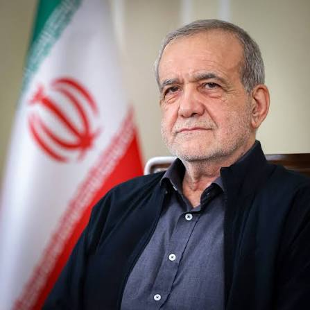
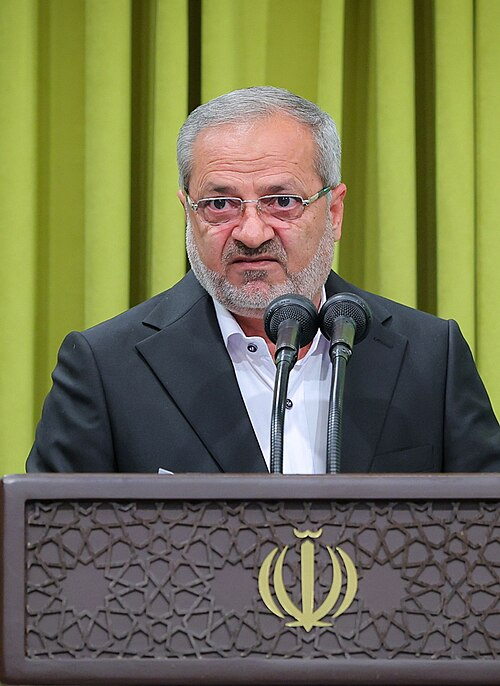

«تحول، کار عمقی است، کار اساسی است که بایستی اتفاق بیفتد.»
مقام معظم رهبری
رهبر انقلاب اسلامی
بر پایه اسناد بالادستی، مسیر تحول را ترسیم کردهایم
سخنان رهبران نظام، چراغ راه معاونت آموزش متوسطه استان
«تحول، کار عمقی است، کار اساسی است که بایستی اتفاق بیفتد.»

«بکارگیری ابزارهای نوین ارتباطی و آموزشی میتواند به اجرای عدالت آموزشی در سراسر کشور کمک کند.»

«ارتقای کیفیت آموزشی، توسعه عدالت و توسعه مهارتآموزی از مهمترین محورهاست.»
شش سند مرجعی که چشمانداز و مسیر تحول استان را ترسیم میکنند
چارچوب کلان حاکم بر نظام آموزش و پرورش
تأکید بر تحول علمی و پرورشی در نسل چهارم انقلاب
نقشهٔ راه بنیادین نظام تعلیم و تربیت
تصویر جامع اهداف و برنامههای آموزشی
اولویتهای توسعهای هفتسالهٔ کشور
مسیر عملیاتیشدن سند در استان
چرخفلک راهبردها — برای مطالعهٔ آرام، نشانگر را روی چارت نگه دارید
عدالت در توزیع فرصتها و امکانات
ارتقای کیفیت فرآیندها و نتایج
هر دانشآموز، یک مهارت
ترویج فناوری و خلاقیت در مدارس
کشف استعدادها؛ آموزش هوش مصنوعی، جشنوارهٔ نوجوان خوارزمی و طرح داناب
ادامهٔ گزارش